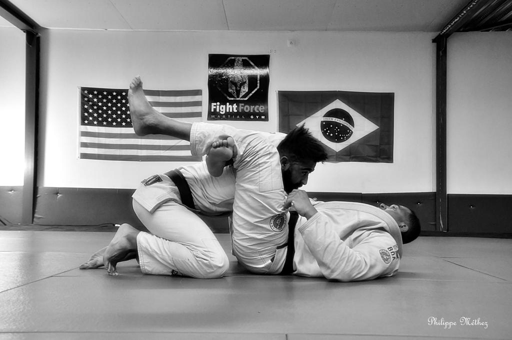

Le Jiu-jitsu brésilien
Qu'est-ce que le Jiu-jitsu brésilien ?
Le jiu-jitsu brésilien est un art martial, un sport de combat et un système de défense personnelle dérivé de techniques du judo et du ju-jitsu importées du Japon au Brésil par Mitsuyo Maéda vers 1920, puis développé par la famille Gracie.
Le jiu-jitsu brésilien promeut le concept qu'une personne peut se défendre face à un opposant plus lourd et fort en utilisant les techniques appropriées.
Pourquoi faire du Jiu-jitsu brésilien ?
Contrairement à la majorité des arts martiaux, qui privilégient le combat debout, pieds et poings, le Jiu-jitsu brésilien se focalise sur le combat au sol, domaine extrêmement technique et où le gabarit joue moins.
Le Jiu-jitsu brésilien est bénéfique pour votre esprit: cet art martial est également connu comme le «jeu d’échecs humain». Les pratiquants de Jiu-jitsu brésilien utilisent beaucoup de stratégies et de techniques pour vaincre leurs adversaires. En fait, un élève de Jiu-jitsu brésilien rencontrera probablement des centaines de techniques et de concepts en seulement quelques années de formation.
Cela vous permet d’utiliser efficacement et correctement votre esprit.
Jiu-jitsu: L'essentiel pour bien commencer sa pratique
La connaissance de son corps
Le Jiu-jitsu brésilien est un sport où votre corps sera mis à l’épreuve débutants comme confirmés. Il est essentiel d’apprendre à reconnaître les petites choses qui vous font du bien et soulagent votre corps durant les moments durant lesquels vous ne vous entraînerez pas. L’alimentation est une solution, comme des activités annexes complémentaires et plus relaxantes ( méditation, yoga…).
Vous l'avez compris, à vous de jouer !
Le renforcement musculaire
Débutants comme confirmés le Jiu-Jitsu Brésilien est un sport mobilisant l’ensemble des muscles du corps. Une des clés à votre progression sera de compléter votre pratique régulières par des activités annexes de renforcement musculaire. Les échauffements durant les entraînements sont des exercices types tirés de séances plus poussées.
Qui peut pratiquer le Jiu-jitsu brésilien ?
Le jiu-jitsu brésilien est pour tout le monde ; les femmes, les hommes et même les enfants de quatre ans peuvent pratiquer le Jiu-jitsu Brésilien. Parce que c’est un art qui est conçu pour qu’un pratiquant plus petit et plus faible puisse maîtriser des opposants beaucoup plus grands et plus forts, pratiquement tout le monde, de n’importe quelle taille, âge ou sexe, peut pratiquer le Jiu-jitsu Brésilien.
Quelles activités dans une séance type de Jiu-jitsu brésilien ?
Comme toutes les pratiques sportives, le secret repose sur l’assiduité à pratiquer régulièrement et dans de bonnes conditions son activité.
Le Jiu-Jitsu Brésilien ne déroge pas à la règle, comptez aux moins deux voir trois entraînements par semaine si vous souhaitez voir des progrès rapidement.
Il faut donc un endroit où la pratique de cet art martial vous soit familier et accessible afin de pratiquer dans les meilleures conditions.
En effet, l’une des clés du succès dans votre quête à la progression sera de répéter régulièrement les nouvelles techniques que vous aller apprendre. Mais aussi, la pratique ! Il vous faudra pour cela, un club avec des adhérents aux niveaux diverses et variés pour tester votre jeu.